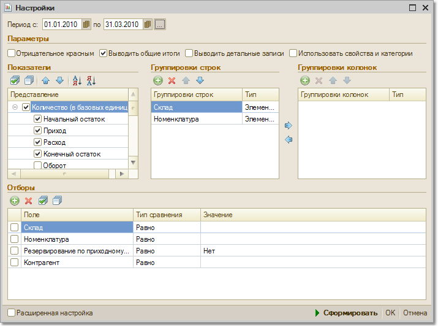

В отчете "Ведомость по товарам к получению" анализируются обороты по товарам, получение которых было оформлено на ордерный склад с помощью документа "Приходный ордер на товары".
Товары на ордерный склад могут поступать как от поставщика, так и от подотчетного лица.В отчете выводятся только количественные показатели. Отчет может быть выведен как в базовых единицах измерения, так и в единицах хранения остатков и в единицах для отчетов.
С помощью данного отчета можно получить график поступления и отгрузки товаров на ордерный склад с любой периодичностью, например за каждый день в течение определенного периода времени. Для этого в настройках отчета установить соответствующие группировки, например, "По дням".

В том случае, если необходимо детализировать приход и расход товаров, полученных на ордерный склад, то нужно на закладке "Поля" в качестве полей детальной записи выбрать "Документ (регистратор)". Причем в отчет можно вывести информацию не только о самом документе, но и о любом реквизите документа.
Например, в отчет можно дополнительно вывести информацию об ответственном сотруднике, оформившем этот документ.
В отчете можно произвести отбор данных по различным параметрам: по группе товаров, по произвольному списку товаров.
Отчет может быть также построен в разрезе серий и характеристик товаров, для построения такого отчета необходимо выбрать соответствующую группировку в настройках отчета.